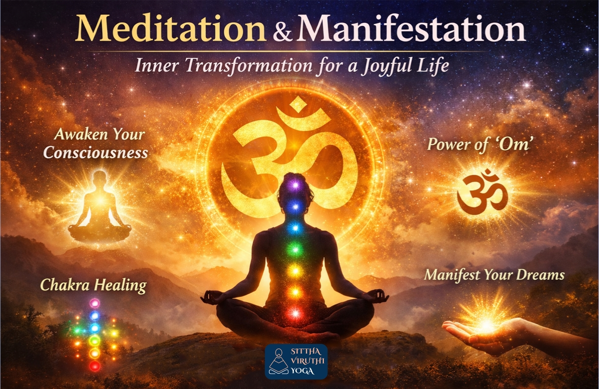

Meditation – A Transformative Inner Journey to Peace, Awareness & Manifestation
Meditation is an ancient, soulful practice that trains the mind to focus and redirect thoughts, leading to a state of calm, heightened awareness, and self-realization. Rooted deeply in the spiritual traditions of India, meditation dates back thousands of years, with documented evidence of meditative postures appearing in the Indus Valley civilization (approx. 5,000–3,500 BCE).
In Sanskrit, meditation is referred to as Dhyāna (contemplation) or Dhāraṇā (concentration). The Vedas, dating back to at least 1500 BCE, are among the earliest documented records that mention meditation. Vedic meditation was often linked with mantra repetition (sacred sounds) or focused gazing, aiming to connect the individual self (Atman) with the universal reality (Brahman).

Meditation – Expanded Form
The Upanishads expanded meditation from a ritualistic practice into a deeply philosophical and transformative experience. Dhyāna (meditation) was considered superior even to intelligence, as it leads to direct realization.
Guidelines for meditation included maintaining a stable posture, practicing breath control, and turning the senses inward, often in a quiet and secluded environment. These teachings also provided a profound map of consciousness, explaining the waking, dream, and deep sleep states.
The cosmic sound Om is recognized as the primal sound of creation and is widely used in meditation as a powerful tool to reach the fourth state, Thuriya. This state represents pure consciousness and bliss. The sound vibrations of Om move from the lower chakras to the higher chakras, promoting healing, relaxation, and spiritual connectedness. The sound itself symbolizes waking, dream, and deep sleep states, while the silence that follows represents Thuriya—the ultimate state of awareness.
Perspectives from Key Masters
Gautama Buddha introduced Vipassana meditation, shifting the focus from rituals to mindfulness and self-observation. Vipassana means “seeing things as they really are,” encouraging individuals to observe thoughts and sensations without judgment, with a primary focus on the breath.
Osho believed that modern individuals are too mentally burdened for traditional silent meditation. He introduced active meditation techniques such as Dynamic Meditation, involving chaotic breathing, emotional release, movement, and eventual stillness. This process helps release suppressed emotions before entering deep silence.
Vethathiri Maharishi developed Simplified Kundalini Yoga (SKY), a system designed to make meditation practical and accessible for everyday life. His teachings focus on achieving mental peace and fostering harmony at both individual and societal levels.
Scientific Perspective on Meditation
Modern scientific research increasingly supports that meditation changes both the structure and function of the brain. From a scientific standpoint, meditation fosters profound mental and physical benefits.
It significantly improves mental well-being by reducing stress and anxiety while enhancing emotional regulation. Through increased self-awareness, meditation helps reduce negative thought patterns and depression. It also improves focus, attention span, and cognitive flexibility.
Physically, meditation helps lower blood pressure by calming the body’s fight-or-flight response. It improves sleep quality by relaxing the mind and reducing overthinking. It also enhances pain tolerance by changing how the brain processes pain signals.
Beyond these, meditation supports self-realization by helping individuals connect with their deeper inner self. It also cultivates compassion and kindness toward oneself and others, as seen in practices like Metta meditation.
Conclusion – Meditation as a Path to Conscious Living
Meditation is not just a practice; it is an exercise of consciousness that expands awareness beyond the dualities of everyday life. It creates an experience of unity, reducing stress while enhancing creativity, clarity, and efficiency.
Meditation is a natural process that does not require forceful control of the mind. Just as muscles strengthen automatically through physical exercise, meditation brings transformation effortlessly through consistent practice. It takes the practitioner beyond the surface mind into the deepest level of the inner self.
Whether viewed through the wisdom of the Vedas, the teachings of Gautama Buddha, the insights of modern masters like Osho, or scientific research, meditation remains a journey from a chaotic mind to a serene and unified consciousness.
Sittha Viruthi Yoga – Meditation with Manifestation
Sittha Viruthi Yoga teaches that meditation is not only about achieving mental calmness but also about living a life filled with love, peace, and joy. It emphasizes that meditation and manifestation are deeply interconnected.
Meditation without manifestation cannot fully realize its potential. When the mind becomes still through meditation, it connects with the infinite—an omnipresent, omnipotent, and omniscient empty space. In this state of stillness, manifestation becomes powerful and effective.
The closer one aligns with this universal space, the faster manifestations unfold. Sittha Viruthi Yoga integrates powerful techniques such as Chakra Cleansing, Thithi Forgiveness Awareness, Meditation, Thithi, and Manifestation to create a balanced, joyful, and peaceful life.
Sittha Viruthi Yoga is not just a practice—it is a transformative inner journey that leads to complete well-being, conscious living, and spiritual evolution.